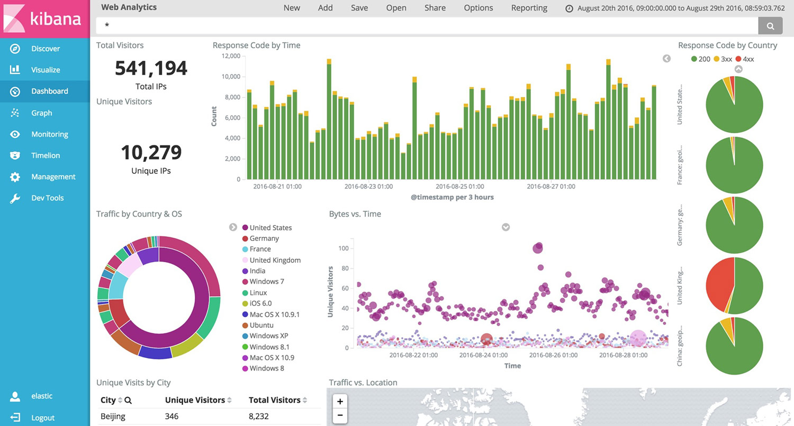

Elo7 + Analytics = Elytics
Publicado em:
@mikedias
Métricas, métricas, métricas! Aqui no Elo7, tanto as métricas de sistema (cpu, mémoria, disco, logs, etc) quanto as métricas de negócio (pedidos, carrinhos, mensagens) importam bastante. Tudo o que acontece no site é capturado, metrificado e monitorado em tempo real para que nós possamos saber se estamos indo bem ou mal e para onde devemos seguir. Para que isso seja possível nós criamos o Elytics (Elo7 + Analytics).
O que é o Elytics?
O Elytics é um conjunto de ferramentas combinadas com o propósito de fornecer uma solução completa para a análise de dados e tomada de decisão em tempo real.
Uma definição mais épica pode ser: um conceito que transcende o ferramental, remetendo a tudo o que está relacionado à metrificação. É comum ouvir as pessoas dizendo "enviar para o Elytics" ou "visualizar no Elytics" quando na verdade estão enviando para o Kafka e visualizando no Kibana.
No Elytics, o fluxo de dados é dividido em quatro etapas, cada uma delas com um componente chave: Coleta (Kafka), Processamento (Flink), Armazenamento (Elasticsearch) e Visualização (Kibana)
Coleta: Kafka
A porta de entrada do Elytics é o Apache Kafka. Tudo o que acontece em nossos sistemas gera um evento que é enviado para um tópico do Kafka, ficando imediatamente disponível para ser consumido por outros sistemas.
Uma vez enviado para o Kafka, o histórico e a auditoria de cada evento está garantido, pois temos uma instância do Secor que faz o backup dos dados para o Amazon S3.
Processamento: Flink
O dado que chega no Kafka ainda é um dado bruto que precisa ser lapidado antes de podermos analisá-lo. Para que isso possa ser feito em tempo real, escolhemos o Apache Flink por sua natureza streaming e sua simplicidade.
Os streams Flink consomem os dados do Kafka para transformar, filtrar, agregar e enriquecer o dado, deixando-o pronto para ser analisado.
Para simplificar nossa vida, nosso cluster roda no Amazon EMR, que nos ajuda providenciando as máquinas, o Hadoop Distributed File System (HDFS) e o Hadoop YARN.
Armazenamento: Elasticsearch
Com o dado pronto para ser analisado, o stream do Flink armazena o dado em índices no Elasticsearch. Apesar do que o nome possa sugerir, o Elasticsearch não é apenas um motor de busca, é também um sistema distribuído de alta performance com capacidades analíticas avançadas.
Quando o dado está no Elasticsearch, já conseguimos extrair métricas através do Framework de Agregações. Aqui começa a diversão: dá pra fazer histogramas, agrupamentos por limites geográficos (!), somatórias, médias móveis, percentil e etc. Tudo isso em tempo real.
Um fato interessante sobre essa arquitetura é que os dados que estão armazenados nos índices do Elasticsearch podem ser apagados e reconstruídos a qualquer momento. Para isso, basta processar os eventos históricos que foram previamente armazenados no S3 e, graças a API unificada do Flink, conseguimos fazer isso com exatamente o mesmo código que consome os dados do Kafka.
Visualização: Kibana
Nós já conseguimos metrificar os dados através do Elasticsearch, mas é no Kibana que vemos os gráficos cheios de vida. O Kibana funciona como uma janela para nossos dados. Nele, conseguimos criar uma análise em poucos segundos e podemos agrupar estas análises em dashboards interativos como este aqui:

Como nem tudo o que tem no Elasticsearch tem no Kibana, eles criaram um sistema de plugins onde você mesmo pode criar suas próprias análises customizadas no Kibana. Nós aqui do Elo7 gostamos muito de análises de Cohort, então criamos o nosso próprio plugin para análise de Cohort.
Conclusão
Bom, esse é o Elytics! Estamos preparando algumas novidades para melhorá-lo ainda mais e que darão um ótimo tema para um próximo post!